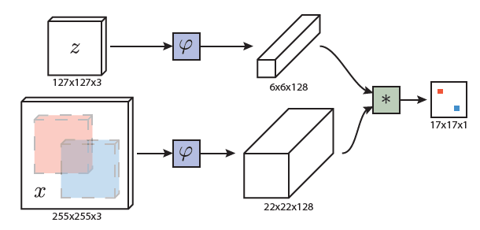

Overview
Problem. Object detection and tracking methods aim to identify and track objects of interest across video frames. Common benchmarks initialise algorithms using a bounding box label from an initial video frame, then the algorithm has to automatically track the object's position across later frames without further input.
Proposed Solution. In a nutshell, SiamFC turns the tracking problem into a matching problem, where candidate positions of the object of interests are compared to an exemplar image (defined by the bounding box in the initial frame). This results in a score map of potential object positions, and the position with the highest score, and above a certain threshold, is labelled as the object of interest. Their solution is very fast as it utilises cross-correlation (convolution) to parallelize comparisons using a GPU. Unlike more sophisticated trackers, SiamFC does not maintain any model or memory of past appearances, and no optical flow / histograms are used, and no regression is performed on the bounding box. Instead, the algorithm performs instance matching and selects the most similar position to the exemplar image.
Method Details
The function $f_\theta(z,x)$ returns a similarity score between an exemplar image $z$ and a candidate image $x$. Lets assume that x and z are the same size.
$f_\theta(z,x) = \varphi_\theta(z) \ast \varphi_\theta(x) + b \mathbb{1} $
where $\varphi$ is a feature extractor, $\ast$ is a dot product, $b \mathbb{1}$ is an extra bias term that is added depending on the location of the candidate image.
However, a search image will contain multiple possible candidate locations, and the size of the z and x will be different. Therefore, cross-correlation can be used to perform comparisons very efficiently across each spatial location of the search image, equivalent to a sliding window algorithm. The $\ast$ operator becomes cross-correlation, and the function $f$ returns a score matrix size $D \in \mathbb{z}^2$, where each value represents a similarity score between the candidate image at the corresponding location and the exemplar image.
The paper uses AlexNet (with total network stride $k=8$), an exemplar image of size $127 \times 127 \times 3$ pixels, and $255 \times 255 \times 3$ search image. The resulting score map is $17 \times 17 \times 1$.
Training
The network is trained on positive and negative pairs, using logistic loss:
$ l(y[u], v[u]) = log \left ( 1 + exp(-y[u] \times v[u]) \right )$
where $v[u]$ is the real-valued score of a single exemplar-candidate pair, i.e. $v[u] = f_\theta(z, x[u])$ at the spacial location $u \in D$, and $y \in \{+1,-1\}$ is the ground-truth for that particular spatial location. The ground truth for a location $u \in D$ is defined as:
\[ y[u] = \begin{cases} +1 & \text{if} ~~ k||u-c|| \leq R\\ -1 & \text{otherwise} \end{cases} \]
where $k$ is the network stride (product of all strides in the network), $u$ is the spatial location in the score map, and $c$ is the centre of the mapped bounding box location, and $R$ is a predefined radius threshold.
Therefore, the score map loss is for the exemplar-candidate pairs is:
$L(y, v) = \frac{1}{|D|} \Sigma_{u \in D} ~ {l(y[u], v[u])}$
The parameters of the conv-net $\theta$ are obtained by applying Stochastic Gradient Descent:
$argmin_\theta ~~ \mathbb{E}_{(z,x,y)} ~ L ( y, v )$
Practical Details
Resizing. The paper adopts a resizing scheme, such that the exemplar image always has an area of $127^2$ pixels$^2$. Suppose an initial bounding box is of size ($w, h$), and there is an additional context margin of size $p=\frac{w+h}{4}$, therefore, an unscaled exemplar image is of size $(w+2p) \times (h+2p)$. The scale factor $s$ for the image is calculated as follows:
$s = \frac{127^2}{(w+2p) \times (h+2p)}$
In reality, the target object could change its relative size in the image. To account for this, the algorithm searches over 3 or 5 scales of the image which range from between up to 5% larger and up to 5% smaller.
Results
SiamFC uses all 5 scales. The SiamFC_3s uses 3 scales.
The algorithms were evaluated on several benchmarks. Below are graphs for the OTB-13 dataset. The evaluation breaks down as:
- OPE (one pass evaluation). This is the average precision / success rate of test sequence.
- TRE (temporal robustness evaluation). This is the average precision / success rate after initialising the algorithm at different temporal points of the sequence.
- SRE (spatial robustness evaluation). This is the average precision after initialising the algorithm with differently sized bounding boxes.
The baselines that can run at frame-rate speeds are: Staple, LCT, CCT, SCT4, DLSSVM_NU, DSST, and KCFDP.

Limitations
This method however has a couple of obvious limitations. What might they be?
Some Follow-up Work
Since 2016 when the paper was published several works have improved the method:
- End-To-End Representation Learning for Correlation Filter Based Tracking, 2017 (paper). It is a follow up work of the SiamFC paper which uses Correlation Filters (CF) as a closed-form solution for differentiable layer in the deep neural network, allowing the features by a network to be closely coupled with CF.
- High Performance Visual Tracking With Siamese Region Proposal Network, 2018 (paper). Introduce Siamese-RPN, alleviating the need to perform multi-scale test and online fine-tuning.
- ECO: Efficient Convolution Operators for Tracking, 2017 (paper). Introduce: (i) factorized convolution operators, which reduce the number of parameters in the model, (ii) a generative model for modelling training distribution, (iii) a model update strategy with reduced complexity and improved robustness. Perform real-time tracking with 65%AUC on OTB-2015.